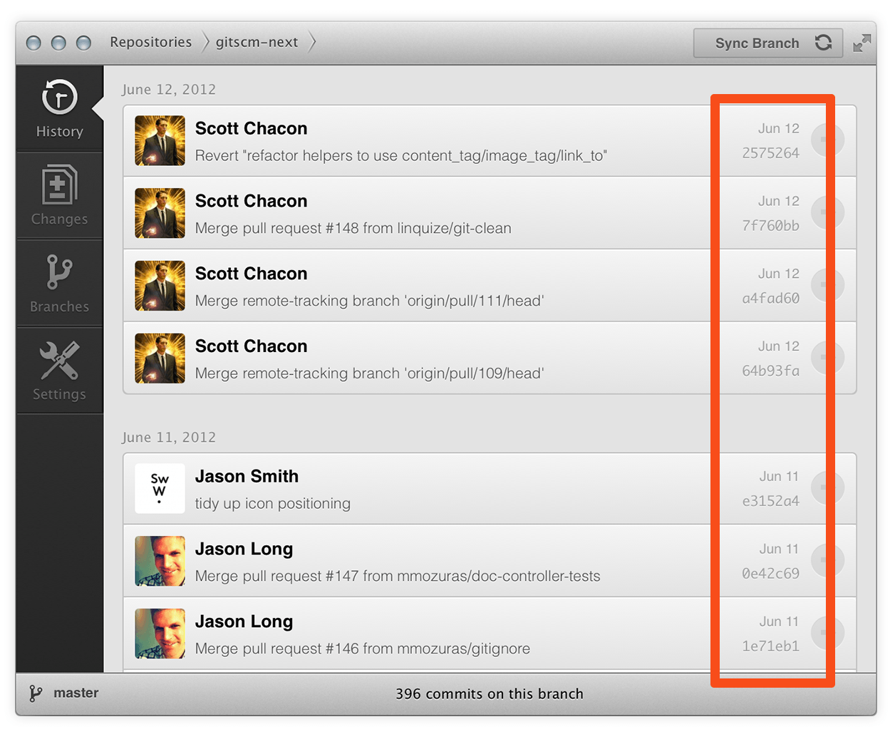

About - Data Assurance
Data Assurance
The data model that Git uses ensures the cryptographic integrity of every bit of your project. Every file and commit is checksummed and retrieved by its checksum when checked back out. It's impossible to get anything out of Git other than the exact bits you put in.
It is also impossible to change any file, date, commit message, or any other data in a Git repository without changing the IDs of everything after it. This means that if you have a commit ID, you can be assured not only that your project is exactly the same as when it was committed, but that nothing in its history was changed.
Most centralized version control systems provide no such integrity by default.